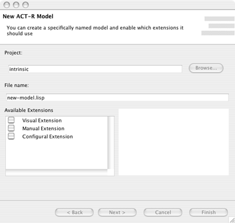
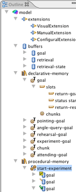
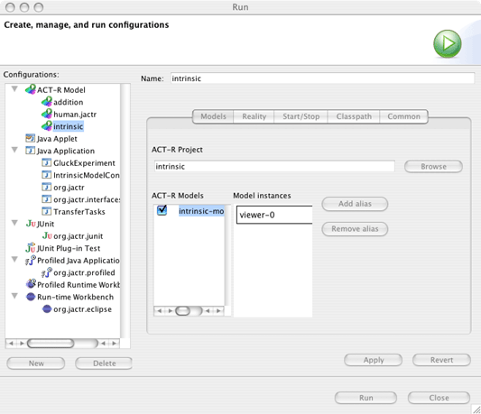
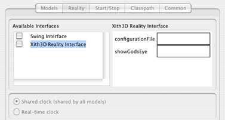
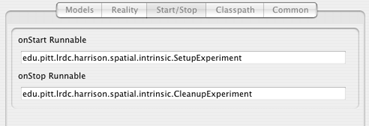

The ACT-R perspective sets up Eclipse with a project explorer, a model outline, and a model log. You can access it from the Window menu item. Window->Open Perspective->ACT-R.
For each modeling endeavour, it is recommended that you create a specific ACT-R Project. Projects can be created via File->New->Project->ACT-R Project. The wizard will prompt you for the name of the project. You can then optionally go on to set up additional project settings.
ACT-R projects are actually Java projects with additional support for ACT-R. The reason for this is that it allows the modeller to include custom Java code in the model. Many times our models, while producing behavior, do not have any support for recording data (nor should they). One can use the custom Java code to instrument models, or to execute the actual experiment. See the Pick-a-Card example for details.
 With a project in place, one can actually start modeling. Starting with a new model is the most common means. Through the New Model wizard (File->New->ACT-R Model) will ask you to specify the project for this model and the model name. The file name extension that you choose for the model will determine what syntax is used to generate the model (see below).
Models are stored under the {project.name}/models directory. Only models within this directory will be recognized as actual models, and be candidates for compiling and running.
You may also select which modules to use with this model (or you can add support in the file yourself, this is just a short cut). You may select the module and read a brief description of what buffers and chunk-types it contributes. Merely mark the check box to include it in your model.
jACT-R uses an XML based syntax. As ugly and repetitive as XML can be, it is still vastly more readable for novices. Additionally, given its consistency, it is much more exportable to other environments and editors. It's also really easy to build consistent parsers and validation checkers for it. This is the preferred format in jACT-R. All jACT-R features are supported via XML.
The Lisp syntax is what most modelers know, as such it had to be supported. However, the support is not complete and the compiler will mark out commands that it does not currently recognize. Additionally, there is no support for program logic (!eval!, !bind!, etc). Only the basic syntax for models is supported (add-dm, chunk, chunk-type, p, sdp, sgp, spp, goal-focus). Support for Lisp is constantly improving (hopefully, !eval! is will coming next).
 To help with navigating through complex models, the IDE provides an outline view of each model that you are working on. It lists all model extensions, buffers, chunk-types, chunks, slots, productions, and parameters in the model. Selecting a specific object in the outline will advance the editor's cursor to the relevant region in the model file.
Currently editing (regardless of model syntax) takes place in a basic text editor. This editor supports basic annotations, including the marking of compilation errors and warnings (in yellow and red). Models are compiled after each save so that you always know how runnable your model is.
The latest version of the XML editor supports content completion, reference highlighting, and folding in addition to code templates and syntax highlighting supported by both.
As previously mentioned, models are compiled on each save. Any errors found will be marked in red and detailed in the Problems view at the bottom of the IDE. This view lets you hop to any error and provides an explanation of the error.
There are also model warnings that are not critical syntactically, but may result in problems during model runs. Later releases will include recommendations upon the detection of common mistakes, misconceptions, or theoretical deviations.
Run->Run... will bring up the run configuration. Selecting the ACT-R template, you are then prompted
to specify the project that you are working in. You may then select one or more models to be run by this configuration. jACT-R
at its core supports many models running at one time in synchronization. If you want to run more than one instance of a specific
model you may do so by providing aliases to that model.

Next you can configure how the model run will interface with the real world. In the case of 'in-the-head' models, this is
not necessary. However, if you are using the Visual, Manual, of any of the spatial extensions, you must select an
appropriate reality interface. If the reality interface has any runtime parameters, you can set them in the field to
the right.

Next you can configure what code is executed when the model run begins and after the last model stops running. This is where the hybrid
Java Perspective comes in handy. You can put together some basic experiment control code (such as starting the experiment or extracting all
the relevant goal chunks at the end to compute performance measures) separate from the model code. jACT-R takes the separation of model
from phenomenon very seriously. Models should not be explicitly tied to any experiment - but just implicitly by the goal structure.

The onStart and onStop classes need to be instances of java.lang.Runnable, with a zero parameter constructor.
The remaining tabs are for Java specific configurations and usually don't need to be modified.
The IDE also provides a model trace viewer. During each run, the model log will reset, clearing out the previous runs. There is a table view of the tracing information. Selecting any specific row (time step) will bring up the contents in the text viewer below. Columns can be filtered out view the filter popup menu. Likewise, in multimodel runs, specific models can be accessed via the model popup menu. The Model trace viewer currently does not remember configurations.